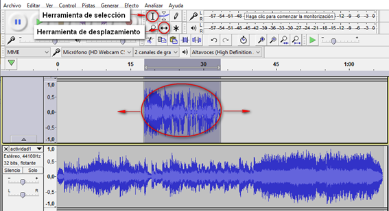
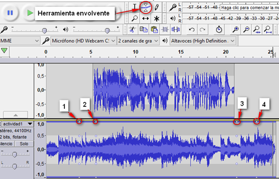
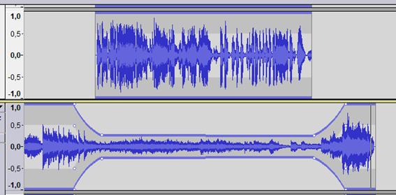

Con este ejercicio se pretende superponer una voz manteniendo una música de fondo.
- Abrimos la grabación de audio a la que queremos poner música de fondo, usa la opción Proyecto/ Importar Audio.
- Repite el procedimiento con el fichero de música (Proyecto/ Importar Audio). Con la herramienta de selección marcada, seleccionamos todo el audio de voz, quedará marcado con un color más oscuro. Ahora seleccionamos la herramienta de desplazamiento (ver imagen), hacemos clic sobre la selección y la desplazamos, de tal forma que escuchemos unos segundos de música antes de empezar el audio de voz.

- Ajustar el volumen de la música de fondo. Para ello vamos a utilizar la herramienta envolvente (ver imagen). Con esta herramienta seleccionada, marcamos un punto en la pista de música, unos dos segundos antes de comenzar el audio de voz (punto 1), otro justo al comenzar la pista de voz (punto 2), el punto 3 lo marcaremos al finalizar el audio de voz y el 4 dos segundos después.

- En la pista de música, hacer clic sobre el punto 2 para arrastrar este punto de control hacia abajo para reducir el volumen de la pista. Hacemos lo mismo con el punto 3. La pista nos quedara como en la siguiente imagen.

- Reproducir y comprobar el volumen obtenido, ajustarlo si fuese necesario.
- Dejar unos segundos de música al acabar la narración y eliminar el resto.
- Desvanecer suavemente el final de la música de fondo. Seleccionar la parte final y aplica el Efecto > Desvanecer progresivamente.
- Guardar y exportar a MP3.